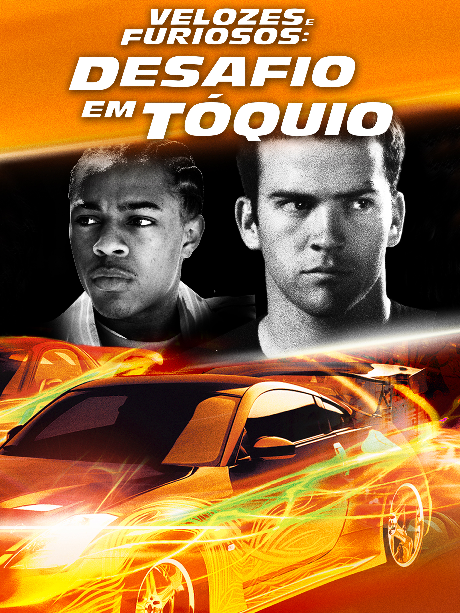
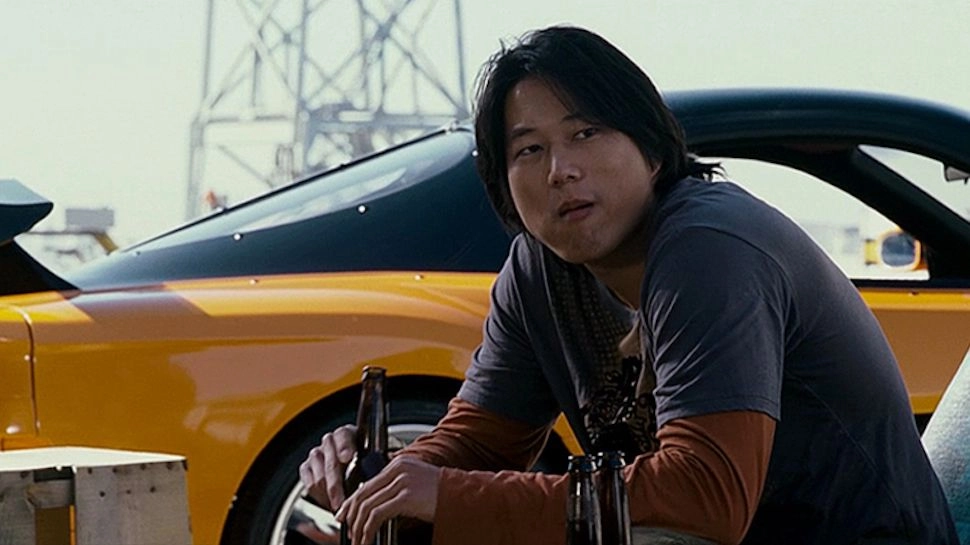
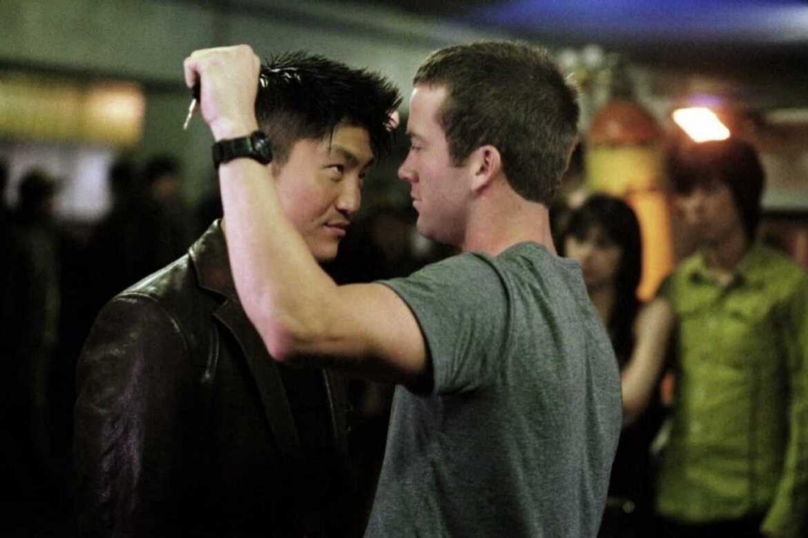
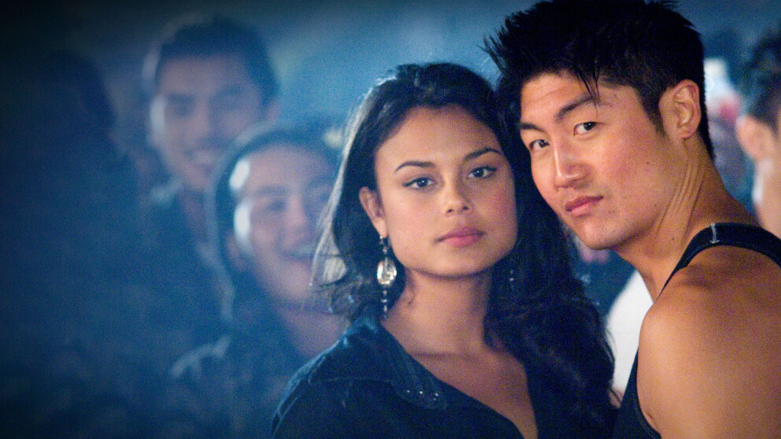
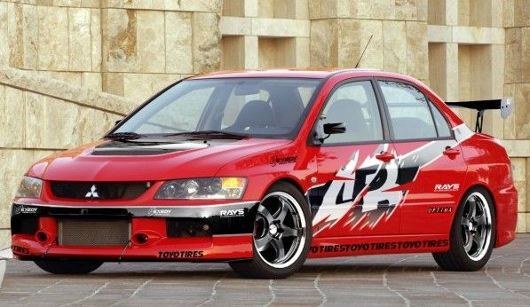

Velozes e Furiosos é uma franquia de mídia e Universo Compartilhado centrado em uma série de filmes de ação que estão amplamente preocupados com corridas de rua, assaltos, espiões e família. A franquia também inclui curtas-metragens, uma série de televisão, videogames e atrações de parques temáticos. É distribuído pela Universal Pictures.



Sean Boswell é um piloto de rua que desafia seu rival e bate o carro no fim da corrida. Ele decide se mudar para o Japão para evitar a prisão nos Estados Unidos, já que os rachas não são nada populares com as autoridades.
Em Tóquio, ele começa a aprender um excitante e perigoso estilo novo de competir nas ruas. Só que os riscos ficam ainda mais altos quando Sean decide rivalizar com o campeão local e acaba se apaixonando pela namorada dele.

